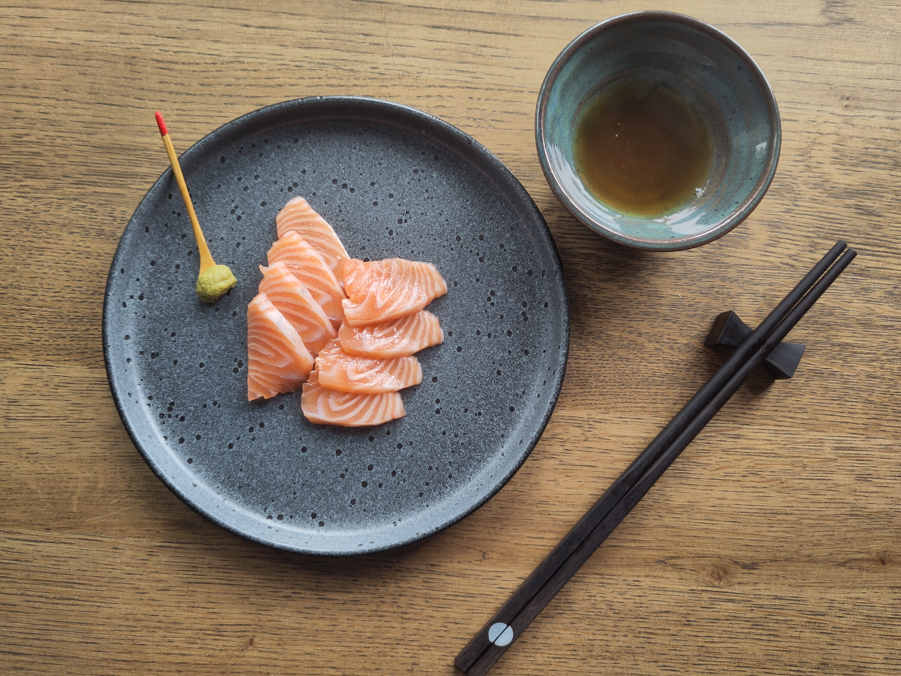
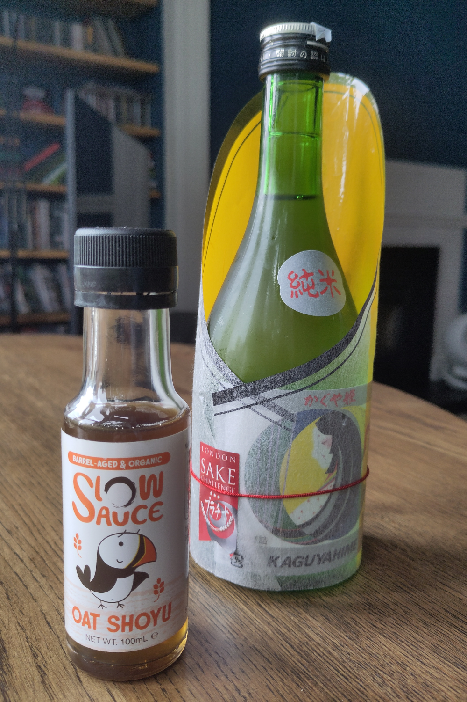
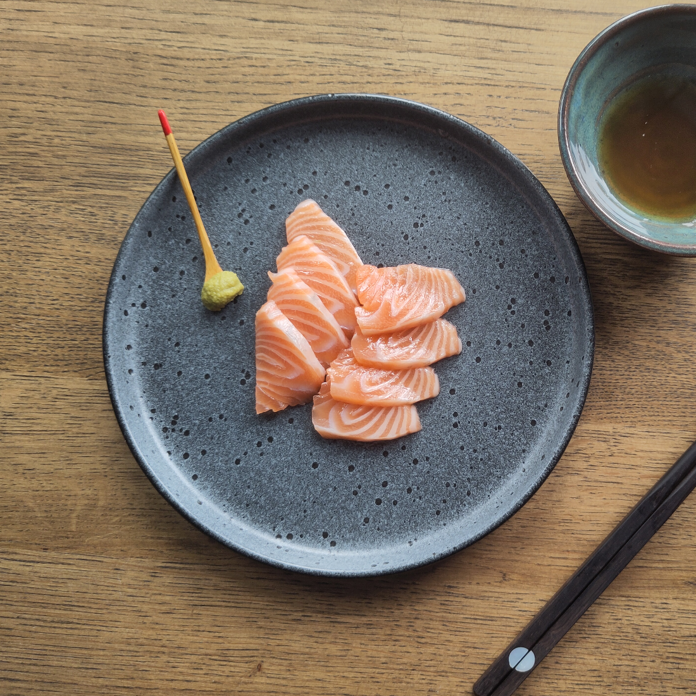

In which somebody else has already had my idea, and I forgive them over a plate of sashimi.


It’s a surprisingly warm day in Glasgow today. Not warm because of the sun, just warm because of the breeze — a hot summer’s day breeze on what is otherwise a fairly grey early autumn day. It’s nice. A bit muggy, but nice. And I’ve just got home with a bag full of salmon fresh from the fishmonger’s, but that’s not what’s exciting me today. What’s exciting me today is what I’m going to do with the salmon, and that is nothing. Today, my salmon is for sashimi.
Actually, what I'm excited for is what I’m going to dunk my sashimi in. Soy sauce. But this is not soy sauce as we know it, Jim. Somebody has taken the idea that I had just weeks ago, and they’ve implemented it several years before me. How dare they. So instead of shipping a shoyu all the way from China or Japan, why not ship the koji, the techniques and the practices, and use local ingredients? I live in Scotland, and one key local ingredient to a lot of Scottish food is oats. That’s the main ingredient of Slow Sauce’s shoyu. The others are Carlin peas, sea salt and koji. Simple. And as you might guess from the name, it’s done slowly - aged, small batch, artisanal.
“I would like to ferment something new. Wouldn’t miso* make a lot of sense.”
*not an article about miso
I discovered Slow Sauce when I had a similar idea. I’ve got a background in data, engineering and automation, and I felt miso was the sort of thing one could semi-automate: a few sensors, a few alerts — not to take away from getting my hands dirty and deep in the process, but to create a data source I could use to track why that batch went wrong, or why that batch went right, and iterate. Still handmade, small batch, but at a scale where I could reliably have a source of it. Onto the internet I go, and I find Slow Sauce has already done that for me. Great. No work for me. So I bought some of their miso and also some of their shoyu. And today, I bought some salmon.
The fishmonger has already deboned it and taken the skin off. I have a lovely fatty piece of belly attached to a main steak, both of which I think could be delicious. I’ve probably bought too much, if I’m honest - but that's just between you and me. First I wash it in a small amount of sake — ten, twenty minutes, a little flavour on the outside before I slice it. The sake is a delicious junmai called Kaguyahime, the name of a princess from the moon, according to the notes that came with the bottle. The recommended way to drink it is hot; I’m having it cold, which is how I prefer my sake, and I think it’s going to go deliciously with the fish.

Filleting the sashimi is always a fun task. I lay the salmon out on my board, take my incredibly long, thin Finnish fish fillet knife — try saying that ten times fast — and slice a few hundred grams into long, thin steaks the thickness of my thumb, the length of my thumb. Then each steak again into thin, tasty, fatty slices.
All of it enjoyably slow, and enjoyably simple.
I lay the sliced salmon on my plate. I mix some of my, quote unquote, wasabi powder with a little warm water into a paste, and put a little on the plate. Then I pour the Slow Sauce shoyu into a small bowl. This is different to what I expected. The colour is very light — not dissimilar to an aged spirit, whiskey or rum, a kind of caramelly golden brown. Not perfectly clear; a little murkiness to it. But it doesn’t look like the shoyu one gets out of a small plastic fish. It’s not black. It’s not even very dark brown.
So let’s try it. I take a piece of salmon and do nothing to it. I stick it in my mouth and enjoy a very delicious, fatty, buttery piece of Scottish salmon. It does have a little tinge of fishiness, not in a nasty way, just in a fishy way. And there is the faintest hint of the sake — really not a strong flavour at all, just the tiniest note of sake, of koji. One reason to use shoyu with delicate sashimi is that it takes away said fishy edge by gently seasoning it.
The next piece I dunk lightly. It’s delicious — it tastes like the best shoyu I’ve had at any sushi restaurant. Salty and umami-ey, but it doesn’t taste oaty in the way I thought it might. Something a bit malty or porridgey, almost, in the flavour — but no, that’s not there at all. It’s barrel aged, and I wondered whether there’d be an oakiness. But no, no vanillins or lignins or tannins. None of those flavours come through. It actually, surprisingly — both excitingly and boringly at the same time — tastes like shoyu. And that tiniest note of sake amplifies the koji, the shoyu and the sake working together beautifully.
“Stop the press. This shoyu has done exactly the job it is meant to.”
The salmon I’m eating right now tastes beautiful. The seasoning has taken away any slight fishiness and left something thoroughly and utterly enjoyable. And drinking the sake alongside it: beautifully light, cold, with that slightly candy-like, earthy koji flavour, a very clean, almost minerally finish, and a lovely sweet, silky mouthfeel.
My next piece, I’m going to add some wasabi — but I’m going to enjoy that on my own, and leave you for today. You can buy Slow Sauce’s shoyu on their website, where they also sell miso and other products, and where there’s a story about how the two people behind it got into this: one a data person, one with a background in fermentation. They run courses at various places around Scotland, including the Bowhouse in Fife, where you can learn to make your own miso from local ingredients. I hope you buy it and try it. Maybe not with a piece of fish. Maybe somewhere else entirely. But it’s delicious.